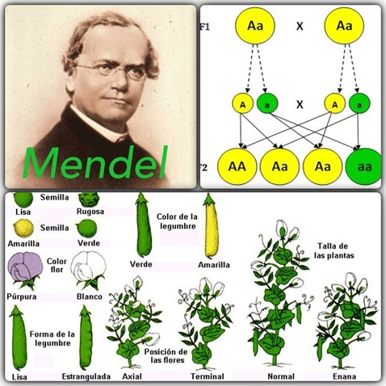

El experimento de Mendel y los guisantes
Introducción
En el siglo XIX, la herencia biológica era un fenómeno descrito pero no comprendido en profundidad. Fue Gregor Mendel, un monje agustino con formación en matemáticas y ciencias naturales, quien sentó las bases de la genética moderna mediante una serie de experimentos meticulosos con plantas de guisante (Pisum sativum). Sus hallazgos, publicados en 1866, pasaron desapercibidos durante décadas, pero más tarde se reconocieron como los principios fundacionales de la herencia.
Gregor Mendel (1822–1884)
Gregor Johann Mendel fue un monje agustino y naturalista nacido en Heinzendorf (actual República Checa). Es considerado el padre de la genética moderna por sus experimentos con plantas de guisante (Pisum sativum), en los que descubrió las leyes fundamentales de la herencia biológica.
Entre 1856 y 1863 cultivó y analizó más de 28.000 plantas, observando cómo ciertos rasgos (como el color o la forma de las semillas) se transmitían de una generación a otra siguiendo patrones regulares. A partir de estos estudios formuló las conocidas Leyes de Mendel: la ley de la segregación, la ley de la distribución independiente y la ley de la dominancia.
Aunque sus hallazgos fueron publicados en 1866, pasaron desapercibidos durante décadas. No fue hasta principios del siglo XX cuando su trabajo fue redescubierto y reconocido como el fundamento de la genética. Hoy en día, Mendel es recordado como uno de los científicos más influyentes en la historia de la biología.

Gregor Mendel
La elección de los guisantes
Mendel escogió los guisantes por varias razones prácticas y científicas:
- Poseen caracteres fácilmente distinguibles (color de las flores, forma de las semillas, altura del tallo, etc.).
- Se reproducen rápidamente y permiten obtener varias generaciones en poco tiempo.
- Pueden autofecundarse o cruzarse de manera controlada, lo que facilita diseñar experimentos rigurosos.
Metodología
Mendel cultivó miles de plantas y registró con precisión las proporciones en que aparecían distintos rasgos en las generaciones sucesivas. Su estrategia fue estudiar caracteres individuales de manera aislada, algo innovador para la época. Comenzó con líneas puras (plantas homocigóticas para un rasgo) y las cruzó entre sí, observando los resultados en la descendencia:
- Primera generación filial (F1): todos los descendientes mostraban el mismo carácter (por ejemplo, semillas amarillas).
- Segunda generación filial (F2): al cruzar entre sí los individuos de la F1, el carácter recesivo reaparecía en una proporción aproximada de 3:1.
Principios de la herencia mendeliana
De sus observaciones, Mendel formuló leyes que siguen siendo pilares de la genética:
1. Ley de la uniformidad de la F1: el cruce de dos líneas puras produce descendencia homogénea.
2. Ley de la segregación: los dos alelos que determinan un carácter se separan durante la formación de gametos, de modo que cada gameto recibe solo uno.
3. Ley de la distribución independiente: los alelos de diferentes genes se heredan de manera independiente, siempre que los genes estén en cromosomas distintos.
Impacto histórico
Aunque sus trabajos fueron ignorados inicialmente, a principios del siglo XX varios científicos redescubrieron sus resultados, coincidiendo con el auge de la citogenética. Desde entonces, los experimentos con guisantes de Mendel se consideran el punto de partida de la genética moderna. Su enfoque cuantitativo, basado en contar y analizar proporciones, lo convierte en un precursor del análisis estadístico en biología.
Aplicaciones modernas
Las leyes de Mendel son hoy un pilar fundamental para múltiples campos de la ciencia y la tecnología:
-
Genética médica: permiten comprender y predecir la transmisión de enfermedades monogénicas, como la fibrosis quística o la hemofilia.
-
Agricultura: guían programas de mejora vegetal y ganadera, donde la selección de caracteres deseables sigue principios mendelianos básicos.
-
Biotecnología: los conceptos de dominancia, recesividad y segregación han sido integrados en modelos computacionales que ayudan a diseñar organismos con características específicas.
-
Educación científica: el experimento de los guisantes sigue siendo el ejemplo pedagógico por excelencia para introducir a estudiantes en los fundamentos de la herencia.
Epílogo
Hoy sabemos que la herencia es mucho más compleja de lo que Mendel pudo imaginar, con fenómenos como la epigenética, la herencia poligénica y las interacciones gen-ambiente. Sin embargo, su metodología rigurosa y sus conclusiones fundamentales siguen siendo enseñadas como la primera gran revolución conceptual en genética.